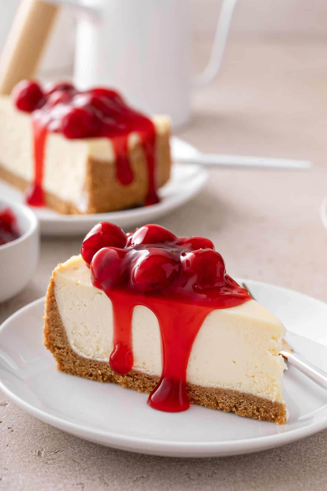

Cheesecake

Let's make a Cherry Cheesecake!
This is one of my favorite dishes to make around the holidays! So easy and
satisfying, I've been using this recipe since I was 13 years old. This
particular recipe uses a graham cracker crust. It is simple and delicious!
Ingredients
- 1 1/2 (8oz) package of cream cheese
- 1 teaspoon of vanilla extract
- 1 (9inch) graham cracker crust
- 2 eggs
- 1/3 cup of sugar
- 1 (21oz) can cherry pie filling
Steps
-
Place cream cheese, vanilla extract, eggs and sugar into a bender; mix
until well blended.
- Preheat oven to 375 degrees
-
Pour mixture into pie crust. Bake in the oven for 30 - 45 minutes; until
top is golden brown.
- Allow 10 - 15 mintues time to cool
- Pour cherry pie filling on top of pie; serve
-
Tip: Best eaten when pie is completely chilled in the refrigerator